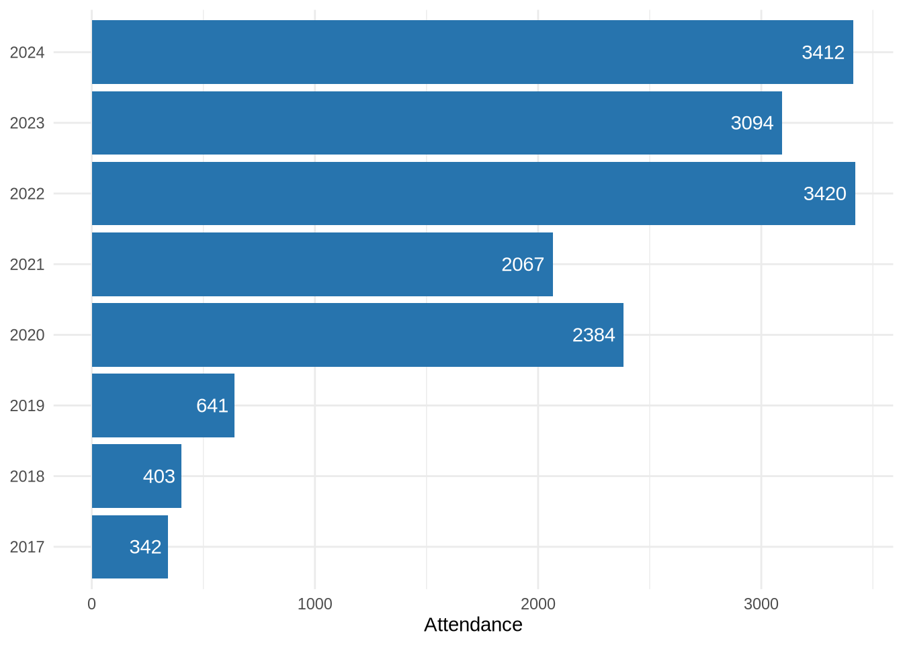
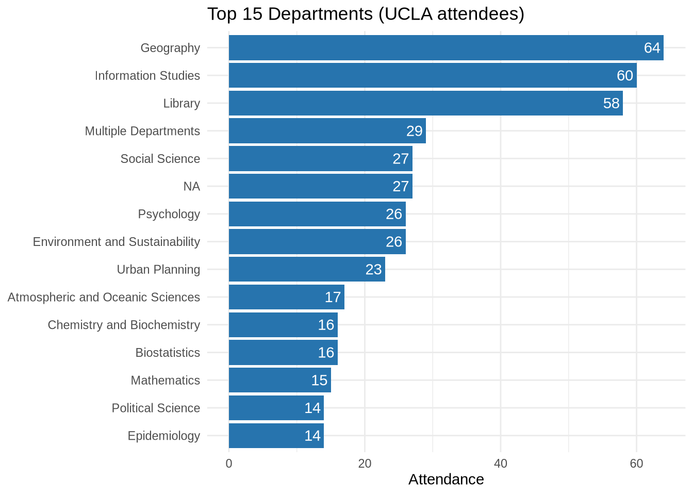
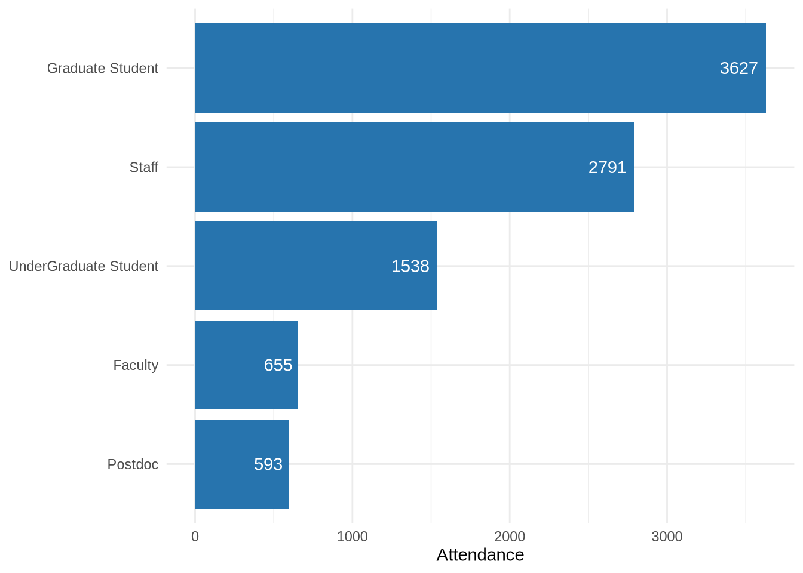

Instruction Statistics
For DSC staff and library administration — workshop attendance from attendee-level and validated aggregate sources.
Last rendered: September 05, 2026
At a Glance (2017–2024)
Total Attendance Records 15,765 All workshop participants, all years · ↑ +10% · 3,412 in 2024 vs 3,094 in 2023
UCLA-Affiliated 1,575 institution == “UCLA”
Years with Data 8 Distinct calendar years
UCLA Affiliation Unknown 5,722 Included in totals; excluded from affiliation, department, and school metrics
UCLA Organizational Parent Known 836 53.1% of validated UCLA attendance
Workshop Attendance
| Series | Year | Attendance |
|---|---|---|
| GIS Week | 2020 | 883 |
| GIS Week | 2021 | 892 |
| GIS Week | 2022 | 596 |
| GIS Week | 2023 | 370 |
| Love Data Week | 2019 | 5 |
| Love Data Week | 2022 | 2585 |
| Love Data Week | 2023 | 2182 |
| Love Data Week | 2024 | 2413 |


See also: Consulting one-on-one consultations · Infrastructure Dataverse and AWS metrics · About & methodology
NoteData notes
- Sources: Consolidated workshop attendee records (including UC-wide GIS Week and Love Data Week) and privacy-safe aggregate workshop summaries
- Unit: Attendance instances. LibInsight uses one attendee-event row; aggregate sources provide a validated count for each event. A person attending three workshops contributes three attendance instances
- UCLA attendees: filtered on
institution == "UCLA". Records with unknown institution remain in overall/year/topic totals but are excluded from UCLA, department, and school metrics - Department:
standardized_departmentfield — mapped from raw free-text entries; unmapped values appear as-is - Organizational parent: versioned mapping from validated UCLA departments to College divisions, professional schools, the Library, UCLA Health, institutes, or administrative groups. Missing and unresolved departments remain unknown
- School/division: not inferred when the source lacks a validated department. Unknown is never treated as non-UCLA
- UC-wide series: GIS Week and Love Data Week are included from the consolidated attendee source; their upstream workbooks are retained as provenance and are not added again
- Full rules: Metrics Governance · About & methodology
| Source | Record type | Rows | Attendance | Date range |
|---|---|---|---|---|
| Consolidated instruction | attendee_event | 14,828 | 14,828 | 2017-05-04 – 2024-04-19 |
| Zoom | event_summary | 9 | 937 | 2024-09-09 – 2024-09-20 |
NoteCite this page
UCLA Library Data Science Center. (2026). Instruction Statistics. Retrieved from https://ucla-data-science-center.github.io/dsc-stats-reports/instruction.html
Last rendered: September 05, 2026